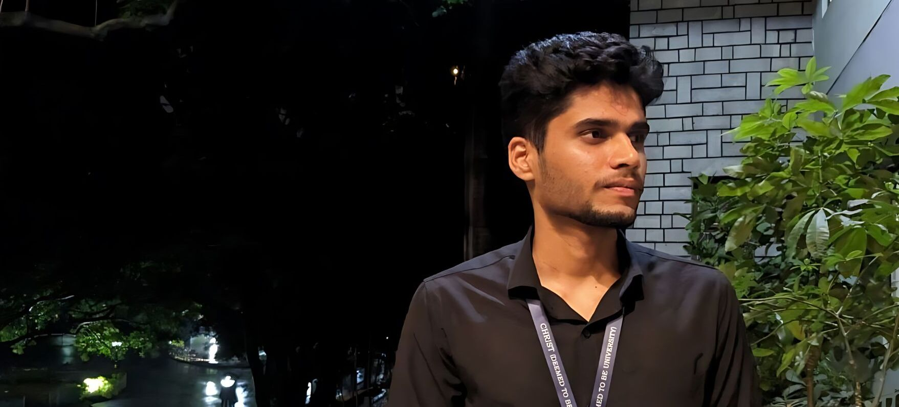

Intro

I am a passionate MSc student in Artificial Intelligence and Machine Learning at Christ University, Bangalore. Currently interning as an AI Engineer at DeepLogicAI, I am keen on exploring innovative AI solutions and advancing my skills in this dynamic field. I am proficient in Python, Large Language Models, and Computer Vision, and committed to applying these skills in real-world applications.
Experience

AI Engineer Intern, DeepLogic AI
June 2024 - Present, Bangalore, India
- Developed an AI-driven document pipeline for efficient ETL processes, enhancing data integration and workflow automation.
- Currently designing a custom Large Language Model for specific applications, optimizing performance and functionality.
Machine Learning Intern, Gilbert Research Center
August 2023 - November 2023, Bangalore, India
- Worked on medical datasets, developing models for analyzing MRI and X-ray data to identify and classify anomalies.
Projects

DocMaster (May 2024 - July 2024)
Designed and implemented a comprehensive document processing pipeline using Python, GenAI, OCR, and Streamlit. Integrated OCR for high-accuracy text extraction from image-based PDFs and refined preprocessing functions for optimal LLM performance.
Advanced Stock Market Prediction (November 2023 - January 2024)
Developed an advanced stock market prediction system using LSTM networks, achieving superior forecasting accuracy. Conducted a comparative analysis between ARIMA and LSTM models.
Integration of TinyML in Edge Computing for Health Monitoring (2022 - 2023)
Engineered a predictive model to analyze historical vital sign data for early detection of health issues, implemented on a low-power ESP8266 device for real-time classification.
Skills
Programming Languages: Python, SQL (Postgres), JavaScript, HTML/CSS, R, C++
AI & ML: Deep Learning, Computer Vision, NLP, Data Science
Web Development: HTML, CSS, JavaScript, PHP, Node.js
Others: Linux (Bash Scripting, System Administration), Security, Networking
Contact